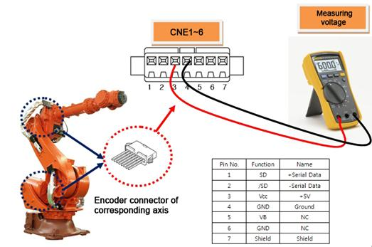
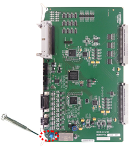
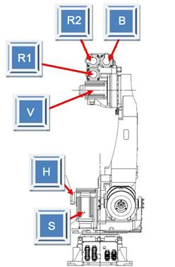

1.1.24.1. Outline
Servo Board receives data from the encoder periodically through a serial communication in order to perform a Servo control on the motor. This error occurs when the data that received from the encoder is normal, but the result of encoder's self-status check shows an error.
1.1.24.2. Causes and examine methods
|
(1) Please check the supply voltage to the Encoder.
(2) Please replace the Motor and test it. |
(1) Please check the supply voltage to the Encoder.
Power supply voltage to the encoder must be in a range of 5V¡¾5% (4.75V ~ 5.25V) - (encoder side connector's supply voltage). If the voltage is reduced below 4.75V, encoder may not operate normally and it will cause this error.
Please measure the voltage of encoder side's connector-pin (3-4).

Figure 1.115 Measuring the encoder voltage

Figure 1.116 Adjusting the encoder voltage
(2) Replacement of Servo Motor and examine it
If the error does not persist after the replacement of Servo Motor, Servo Motor is faulty. Please replace the Servo Motor with new one. Below diagram describes the locations of each axis's motor (HS165 Robot). For other Robot, please refer to the Robot's maintenance manual to replace it.

Figure 1.117 Locations of Each Axis's Motor (HS165 Robot)